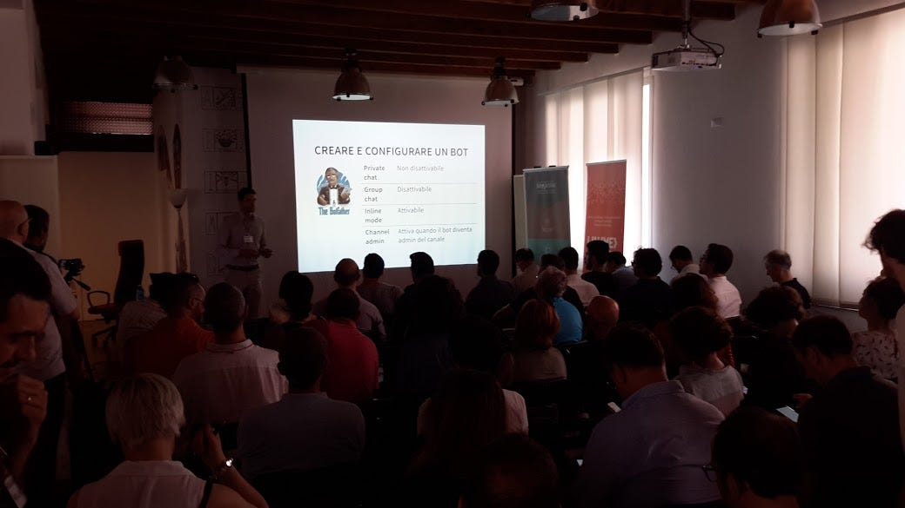
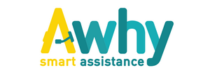
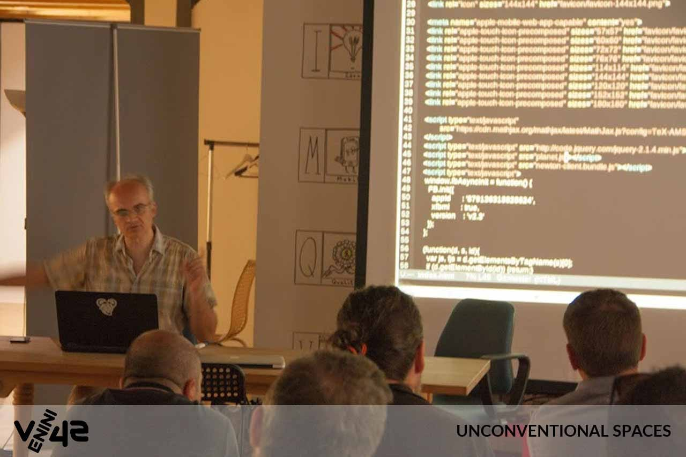
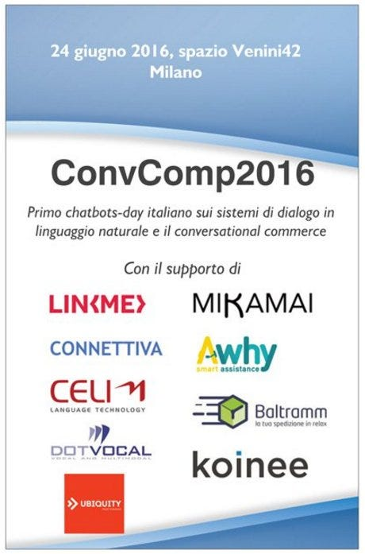

IL CONVERSATIONAL COMPUTING E LA RIVOLUZIONE DEI CHATBOT!
Primo chatbots-day italiano sui sistemi di dialogo in linguaggio naturale ed il conversational commerce

Il primo evento italiano sulla “computazione conversazionale” nasce con l’obiettivo di mettere a fattor comune le competenze di aziende, università, enti di ricerca, sviluppatori e di qualsiasi altro operatore (in ambito business/profit e no-profit/pubblico) attivo nel settore dei sistemi di dialogo interattivi in linguaggio naturale: i chatbot.
L’evento è pensato come momento di approfondimento delle applicazioni e delle tecnologie e conoscenze alla base dei sistemi chatbot, per un pubblico ampio di soggetti potenzialmente interessati (aziende private, università ed enti di ricerca, sviluppatori, esperti di linguaggio naturale).
L’impostazione dell’evento è di tipo tecnico ma non saranno trascurati gli aspetti applicativi commerciali.
NEWS POST EVENTO
SLIDES
http://www.slideshare.net/convcomp2016/presentations
COMMUNITY BLOG
Dall’evento convcomp2016 nasce questo blog collaborativo per una comunità italiana di sviluppatori, università, aziende che fanno chatbots, engines cognitivi ed applicazioni conversazionali di intelligenza artificiale.
https://convcomp.it
VIDEO
Presto disponibili video in alta risoluzione, per singoli speech.
LOCATION
Il 24 giugno 2016 a Milano, presso lo spazio www.venini42.it
LIVE STREAMING DELL’EVENTO!
1. Live streaming sessione del MATTINO (dalle ore 9:30): http://bit.ly/convcomp2016live
2. Live streaming sessione del POMERIGGIO (dalle ore 14:00): http://bit.ly/convcomp2016live2
Agenda — Sessione del mattino
Dopo un’introduzione generale, saranno approfondite le possibili applicazioni dei sistemi chatbot in diversi settori applicativi. Spazio ad aziende e startup!
09:00 Registrazione
09:30 Benvenuti nello spazio Venini42
09:35 Perchè #convcomp2016 di Giuditta Del Buono
09:45 Il conversational computing: panoramica e prospettive in Italia di Giorgio Robino
10:00 The new era of bots, multi-channel messaging solutions, dynamic routing and automation of everything di Nicola Junior Vitto
10:20 Assi.st chatbots su Facebook e non solo di Claudio Comandini
10:45 Your.md. Analisi di un dottore artificiale: come ragiona? di Mario Alemi
11:10 From click to Natural Language: The “Human” Side of your Apps di Erica Barone e Jessica Tibaldi
11:35 Parla con me: interfacce conversazionali fra Natural Language Processing e Customer Experience di Alessia Bianchini
12:00 Verso la “chat intelligente”: la ricerca in Natural Language Processing e Machine Learning di Bernardo Magnini
12:30 Talk con relatori e pubblico sugli interventi del mattino
13:00 Break e ristorazione
Agenda — Sessione del pomeriggio
Saranno trattati gli aspetti legati alla ricerca e allo sviluppo tecnologico.
14:00 Telegram Bot API Overview di Marco Boretto
14:25 BOT BOT BOT: the newest UX with the oldest UI di Francesco Fiore
14:50 Chat, Bot and Payment Processor: Conversational Commerce di Daniele Rebellato
15:15 Awhy, customer care automation is now di Nabil Arafin
15:20 Riconoscimento vocale e chatbot: finalmente possiamo parlare con le macchine di Enrico Reboscio
15:40 Telegram e gli opendata: dai dati ai servizi per il cittadino di Francesco Piero Paolicelli
16:05 Bot conversazionali e intelligenza collettiva di Alessandro Bogliolo
16:25 Dieci anni di chatbot commerciali in Italia. L’amore per la parola di Roberto Gilli
16:55 La drammaturgia dei chatbot di Antonio Pizzo
17:20 Human or Bot: that is the question di Alessandro Aglietti e Mattia Occhiuto
17:45 Talk finale con relatori e pubblico
18:00 Saluti ed aperitivo
DETTAGLI SU INTERVENTI E RELATORI
1. The new era of bots, multi-channel messaging solutions, dynamic routing and automation of everything
We are entering a new era where it seems that everything could be managed via chatbots (instead of apps full of “messy” UIs). Messaging is becoming “liquid”, channels are increasing, for P2P messages SMS are falling down while Whatsapp and other IMs surpassed every other communication channel in history. What will be a possible future? How can we organize and aggregate everything, solving the complexity and gaining momentum from all the opportunities? (15m)
Nicola is a passionate professional about Internet, E-Commerce, Technology and SaaS products with 12 years of frontline experience mostly in Fashion, Finance and Travel industries. During the last 10 years Nicola has been focused mostly in large and fast scale Internet products (web, mobile, social media): before founding his own startup (Blomming.com) Nicola worked in many different senior/management roles for companies like Yoox.comand Venere.com. From December 2014 Nicola joined Ubiquity as VP Marketing, with the goal to enhance the product offering of the already leading Italian Messaging company and focusing on the expansion in International markets. http://njvitto.com/
2. Assi.st chatbots su Facebook e non solo
Dopo aver collaborato con Facebook per il power del bot di 1800flowers.com, presentato sul palco dell’ultimo F8, Assi.st presenta la sua missione: portare business sui sistemi di messaggistica con la propria infrastruttura multi channel. (20m)
Claudio Comandini. Software Engineer con qualche anno di esperienza e parecchie startup alle spalle. Appassionato di tecnologia. www.assi.st
3. Analisi di un dottore artificiale: come ragiona?
Your.MD ha creato un assistente medico virtuale tra i più intelligenti al mondo. Mario Alemi presenta un’analisi dettagliata del cervello di Your.MD: come interpreta, ragiona, e fa domande? Insight su come il database a grafo sviluppato sia capace di immagazzinare diversi “belief network”, fornire diagnosi basate su inferenza probabilistica, e rivolgere domande basate sull’ottimizzazione di entropia. (20m)
Mario Alemi, dottorato in fisica presso il CERN, è stato docente di Analisi Dati per la Fisica e Metodi Matematici per il Business. Si occupa da 25 anni di modellizzazione matematica. Attualmente è data officer presso your.md. visualab.org
4. From click to Natural Language: The “Human” Side of your Apps
Da anni utilizziamo le nostre app con il mouse, la tastiera e il touch dello schermo, ma oggi abbiamo la possibilità di interagire in modo più naturale: parlando, chattando, guardando la nostra app che diventa sempre più “umana”.
In questa sessione, presenteremo le novità di Microsoft legate alla creazione dei Bot e alle API messe a disposizione dai Cognitive Services. Grazie a queste tecnologie è possibile “parlare” direttamente con le nostre applicazioni che acquisiscono la capacità di comprendere le nostre intenzioni ed emozioni sfruttando questi dati come informazioni per l’interazione. (20m) https://www.microsoft.com/cognitive-services/ https://dev.botframework.com/
Erica Barone è Technical Evangelist in Microsoft Italia da maggio 2014, con focus sulla piattaforma Windows e sull’Internet of Things. Dopo aver lavorato per un anno come firmware designer per barriere di sicurezza e sensori di visione presso Datalogic Automation s.r.l., ha iniziato l’attuale lavoro in Microsoft Italia, seguendo tutti gli eventi dedicati agli sviluppatori Windows e IoT, e gestendo i rapporti con le Community italiane che si occupano di tecnologie Microsoft. @_ericabarone
Jessica Tibaldi è Technical Evangelist in Microsoft Italia da gennaio 2015, con focus sulla piattaforma cloud, Microsoft Azure. Laureata in Ingegneria Gestionale al Politecnico di Torino a luglio 2014 è responsabile principalmente della formazione e del supporto tecnico alle startup nell’ambito del programma BizSpark. @_jetiba
5. Parla con me: interfacce conversazionali fra Natural Language Processing e Customer Experience
Il linguaggio naturale è la nuova interfaccia utente? Nella vita di tutti i giorni dei (quasi)nativi digitali, la probabilità di trovarsi a dialogare con una macchina è sempre più alta. Lo scopo dei sistemi conversazionali è fornire agli utenti una interazione semplice e “naturale”, tramite lo strumento che conoscono meglio: la loro stessa lingua. La sfida è duplice: da un lato, si tratta di affrontare ancora una volta problematiche (più o meno note) relative alla complessità del linguaggio umano; dall’altro lato, si tratta di trasformare in valore il risultato dell’interazione, modellando quest’ultima sul dominio di riferimento. In questo intervento vi raccontiamo, con casi concreti, come integriamo le nostre tecnologie di Natural Language Processing in una metodologia di raccolta dati linguistici e di progettazione dell’esperienza utente. (20m)
Alessia Bianchini, linguista computazionale e key account manager. https://www.celi.it/
6. Verso la “chat intelligente”: la ricerca in Natural Language Processing e Machine Learning
Bernardo Magnini, presidente della Associazione Italiana di Linguistica Computazionale, in questa relazione fa il punto della ricerca nel campo del Natural Language Processing e del Machine Learning per quanto riguarda lo sviluppo di tecnologia per chat intelligenti. Circoscriverà l’argomento a brevi conversazioni via tastiera nell’ambito delle interazioni tra cliente e call centre, a supporto di operatori. La tecnologia attuale, tra l’altro, comprende metodi di classificazione automatica delle richieste, l’applicazione di tecniche di similarità semantica per il recupero automatico di FAQ, l’interpretazione semantica delle richieste con tecniche di Question/Answering per ottenere risposte da dati strutturati, e l’organizzazione di grandi flussi di richieste utilizzando grafi semantici a supporto di processi inferenziali. Infine, i recenti sviluppi nel campo delle reti neurali aprono nuove prospettive e sfide per la gestione automatica di dialoghi complessi. (25m)
Bernardo Magnini e’ ricercatore senior presso la Fondazione Bruno Kessler di Trento, dove è coordinatore scientifico della Linea di Ricerca Cognitive Computing. I suoi interessi di ricerca sono nel campo del trattamento automatico del linguaggio, in particolare della semantica computazionale, settore in cui ha coordinato vari progetti internazionali. E’ tra i fondatori, e attuale Presidente, della Associazione Italiana di Linguistica Computazionale. http://hlt-nlp.fbk.eu/people/profile/magnini
7. Telegram Bot API Overview
Telegram ha lanciato il servizio bot a giugno 2015, la API nel corso
di questo anno si e’ arricchita ed e’ arrivata ora alla versione 2.1.
Marco Boretto condivide idee e spunti, maturati in un anno di
sviluppo, per costruire un chat bot utilizzando al meglio gli
strumenti messi a disposizione da Telegram. (20m)
Marco Boretto — Collaboratore di ricerca presso l’Universita’ di Torino. Appassionato di web e chat bot, developer @grocerylistbot. https://www.linkedin.com/in/marcoboretto
8. BOT BOT BOT: the newest UX with the oldest UI
Qual’è il potenziale impatto del bot in termini di User Experience? In quali casi il BOT può superare l’app in termini di performance e perché? Per quali aree del nostro business dovremmo considerare un BOT? Come si progetta e come si può lavorare in team allo sviluppo di un buon BOT? (20m)
Francesco Fiore, Designer e Imprenditore, 27 anni. Master Visual Design (SPD, Milano). Da quando ho 14 anni disegno pixel e scrivo righe di codice per costruire prodotti digitali. Negli ultimi 5 anni ho seguito startup e importanti brand come consulente Product / UX e Branding. Currently in love with FB Bots. www.70division.com
9. Chat,Bot and Payment Processor: Conversational Commerce
Siamo di fronte a una rivoluzione nell’E-commerce? L’opportunità è creare nuovi modelli di Business unicamente basati sull’uso complementare di Chat,Bot e Payment Processor.
La conversational UI può sostituire o affiancare le tradizionali interfacce web/app, offrire servizi personalizzati, semplificare l’esperienza d’acquisto, modificare ads e molto altro. Analizziamo casi reali dove l’automatizzazione di un bot puó essere già da subito un vantaggio in termini di UX.
Focus su CPG nei modelli di Subscription e Direct-to-consumer. (20m)
Daniele Rebellato. Fondatore di Dealest App conversational mobile commerce. Esperienza in startups Affective Computing e Healthcare. Passione per Chatbot e E-commerce.
10. Awhy, customer care automation is now
Come aumentare la customer experience & retention in un contesto omnia oriented. (5m)
Nabil Arafin, CEO & founder di Awhy. Ex consulente bancario mentor programma EYE.
11. Riconoscimento vocale e chatbot: finalmente possiamo parlare con le macchine
Le straordinarie nuove opportunità offerte dal riconoscimento vocale in cloud e la loro integrazione con le chatbot permettono di immaginare un profondo cambiamento nel futuro dell’Interaction Design delle applicazioni. DFriend integra le tecnologie embedded tradizionali che utilizzano grammatiche di riconoscimento con le nuove opportunità offerte dal cloud, per mettere a disposizione un vasto insieme di opportunità per chi vuole usare la straordinaria opportunità della voce nell’Interaction Design dei nuovi sviluppi.
Enrico Reboscio è CEO & Founder di Dotvocal, azienda specializzata nelle tecnologie vocali presente sul mercato dal 2004. Project Manager di diversi progetti innovativi e di ricerca e sviluppo nell’ambito dell’integrazione delle tecnologie vocali nell’Interaction Design.
12. Telegram e gli opendata: dai dati ai servizi per il cittadino
Sfruttando gli opendata messi a disposizioni dalla PA ma anche dalla comunità (vedi openstreetmap), si possono realizzare Bot Telegram che forniscano servizi utili ai cittadini: arte, sanità, intrattenimento, trasporti, cultura. Verranno mostrati alcuni casi realizzati e i criteri di replicabilità. (20m)
Francesco Piero Paolicelli, già OpenData Manager Comune di Matera, consulente OpenData Comune di Lecce, già membro Task Force Agenda Digitale Lucana. Civic hacker, coderdoojo champion. http://www.chefuturo.it/author/francescopieropaolicelli/
13. Bot conversazionali e intelligenza collettiva
Ci sono cose che sono sotto gli occhi di tutti e che nessuno conosce davvero. Ci sono cambiamenti che possono avvenire solo dal basso. L’intelligenza collettiva è la capacità di una moltitudine di persone di andare oltre ciò che i singoli individui possono fare o comprendere. I bot conversazionali offrono strumenti straordinariamente semplici e potenti per mettere l’intelligenza collettiva al servizio dello sviluppo e dell’interesse collettivo. (15m)
Alessandro Bogliolo, Andrea Seraghiti, Lorenz Klopfenstein e Saverio Delpriori sono co-autori del MOOC “Piattaforme digitali per la gestione del territorio” offerto dall’Università di Urbino sulla piattaforma europea EMMA per esplorare le potenzialità dei bot conversazionali come piattaforme per lo sviluppo territoriale. https://platform.europeanmoocs.eu/course_piattaforme_digitali_per_la_ge
14. Dieci anni di chatbot commerciali in Italia. L’amore per la parola
10 anni di esperienze di interfacce dialoganti in progetti europei e in aziende italiane: una piccola panoramica di utilizzi, di successi ma anche di difficoltà. E di prospettive future. Quanto conta la scrittura in un’interfaccia dialogante? La scrittura non lineare dei giochi digitali, dei libri game, degli ipertesti e delle opere generative come palestra mentale per un scrittura (e una narrazione) che si crea nell’interazione con l’utente. La (bella) parola come interfaccia. Un nuovo scrittore come parte del team di sviluppo di prodotti digitali. (25m)
Roberto Gilli si occupa di R&S e innovazione digitale dal 97. Innamorato da sempre della scrittura non lineare si è appassionato al NLP e si occupa di interfacce dialoganti da circa dieci anni: prima fondando Dialobot e poi Intoote: startup che hanno sviluppato chatbot per alcune grandi aziende italiane. http://www.intoote.it
15. La drammaturgia dei chatbot
Che differenza c’è tra una conversazione e un dialogo drammatico? La prima fornisce informazioni e stabilisce legami sociali; il secondo ci emoziona. I chatbot sono efficaci quando uniscono le informazioni alla creazione di emozioni, quando restituiscono l’impressione di qualcosa con un carattere, una personalità. Perché dovrebbe essere più interessante ricevere una risposta in linguaggio naturale invece di una grafica? Perché quella risposta mi induce a fare un’altra domanda; perché in quella linea di testo posso riconoscere una possibilità di sviluppo. La drammaturgia ha molto da insegnare in questo campo. Sulla base di queste considerazioni preliminari, l’intervento traccerà alcuni punti fondamentali di contatto tra la creazione dei chatbot e la tecnica drammatica. (20m)
Antonio Pizzo
Professore Associato
(L-ART/05 Discipline dello spettacolo). Dipartimento di Studi Umanistici. Università degli Studi di Torino. www.cirma.unito.it/pizzo
16. Human or Bot: that is the question
Il panorama degli assistenti virtuali sinceramente ci spaventa un pochino! In breve tempo sarà naturale parlare e scrivere ad un bot. L’immaginario descritto da “Lei” si avvicina? Saremo in grado di miscelare abilmente i due aspetti, human e bot, nel realizzare questo nuovo paradigma? Cerchiamo di scoprirlo assieme! (20m)
Alessandro Aglietti: nel 2007, grazie alla scuola, mi sono appassionato di sviluppo software. La passione si è poi trasformata in professione. http://aqquadro.it
Mattia Occhiuto: sono un Front End software developer, appassionato di programmazione javascript sia client side che server side. Sono particolarmente interessato a paradigmi di programmazione funzionale e a tutti pattern reattivi che stanno emergendo (e ritornando) grazie ai numerosi framework che “appaiono” nell’ambito javascript. Quando non sono con la testa davanti al pc sono fuori a correre :). https://www.linkedin.com/in/mattia-occhiuto-3b817537
Argomenti trattati e spunti di ricerca
Panorama applicativo
Il conversational computing (termine con cui intendo qualsiasi software che conversa in linguaggio naturale) è un “vecchio” settore di ricerca della computer science e dell’intelligenza artificiale, ma di crescente e rinnovato interesse nel 2016, anche in relazione alla possibilità di sviluppare applicazioni commerciali sulle maggiori mobile apps di messagistica istantanea. L’evento si propone di chiarire cosa si intenda si intenda per “bot” nel 2016, indicando nuove prospettive (in termini commerciali e di ricerca e sviluppo scientifico). Casi di studio analizzati:
- Conversational Commerce. Esempi di prodotti che realizzano già conversational online shopping/ecommerce/booking (WeChat official accounts, Kip su Kik e Slack, Uber su Facebook Messenger, etc. etc.). Presente all’evento: assis.st
- Customer Care Automation (automazione dell’help desk con agenti virtuali AI-based e/o operatori umani). Presente all’evento: awhy.it
- Pagamenti elettronici, “home”-banking bots, servizi fintech.
- E-learning (insegnamento/lezioni remote, esami/quiz online, sistemi di correzione automatica (AI-teaching) dei compiti/esercizi.
- Games & Gamification (text-adventures, narrative fiction)
- Concierge Journalism (personalizzazione sull’utente /news conversazionali)
- Healthcare (controllo remoto dei pazienti, assistenza medica remota). Presente all’evento: Your.md
- Smart Home e Internet of Things (hubs e controllo di dispositivi ed apparati).
- Automotive (dispositivi HW di navigazione ed entertainment, utilizzanto chatbot con interfaccia vocale)
Chatbot Tassonomia
- 1-on-1 e group-chat — user experience, employee experience (team-chat per team working) o in contesti operativi devops (#chatops).
- Classificazione e complessità “cognitiva”— Generazione I (command-based). Generazione II (conversation-based). Generazione III (chatbot “persona” con capacità inferenziali).
- Intelligenza artificiale: con o senza ? — Agenti virtuali di tipo personal assitant oppure servizi specifici a singoli domini (horizontal vs vertical)
- Chatbot solo software o a supporto di operatori umani ? — 1: Soluzioni totalmente software. 2: Soluzioni con solo esperti umani “dietro alle quinte”. 3: Soluzioni di integrazione tra esperti umani e chatbot (human-supervised AI learning, soluzioni on-off AI).
Piattaforme: non solo chat apps
Chatbot e messaggistica istantanea — L’attuale crisi delle mobile app. Il messaging come paradigma di comunicazione asincrona ma statefull. Le piattaforme su cui fare chatbot: Wechat (Cina) e LINE (Giappone), Kik (Canada), Telegram Messenger, Facebook Messenger, Slack, Skype, Indoona (della italiana Tiscali).
Chatbot su piattaforme “tradizionali” e futuristiche — E-mail, command line interface su terminale, Online Social Networks (Twitter DMs), chiamata telefonica vocale e videochiamata. Videochatbot.
Dispositivi hardware dedicati — Smart home hub (e.g. Amazon Echo e Alexa). Il monitoraggio e controllo di sensori/attuatori.
In-car navigation e infotainment — La prossima generazione di sistemi di navigazione (satellitare) integrerà chatbot a comando vocale per informazioni ed entertainment.
Interazione con i robot (antropomorfi) — Interfacce uomo-macchina in linguaggio naturale Run-time/real-time.
Chatbot how-to per sviluppatori
- Full-conversational UX oppure web-embedded (GUI alla Wechat) ?
- Hard-coding con linguaggi di programmazione standard
- Disaccoppiamento del flusso di dialogo dalle logiche di back-end (actionable data) — uso di dialog flow scripting languages (AIML, ChatScript, etc.)
- AI engines e machine learning middleware: Platform as a Service— Piattaforme cloud ed APIs proprietarie (esempi: Wit.ai, Api.ai, IBM Watson Dialog) oppure soluzioni open-source (ChatScript, etc.) ?
- Frameworks ed integrazione di plug-in (esempi: Amazon Alexa Skills, Microsoft Bot Framework).
- Dialog authoring e linee guida su conversational user experience.
- Disaccoppiamento dei ruoli e delle competenze lavorative — esperti di linguaggio naturale, comunicazione relazionale, letteraria e di dialogo, per la definizione del dialog flow, in collaborazione con standard developers per la logica di back-end (database, integrazione API di servizi terzi, etc.).
Ricerca e Sviluppo nei Sistemi di Dialogo
- Definizione di un Dialog flow script language open-source, per la condivisione di dialog knowledge-base. Semantic web, database lessicali e linguaggi naturali, domain-expertise sharing
- Dai dialoghi man-machine alle interazioni bot-on-bot: metalinguaggi e protocolli per servizi di M2M: discovery e “negoziazione” non supervisionate oppure con directories pubbliche e motori di ricerca ?
- Boteness, botiquette, bot-personas ed abilità cognitive: integrazione tra competenze linguistiche ed umanistiche e computer science per la progettazione di chatbot con elevate capacità conversazionali e cognitive
Innovazione nelle aziende e nella PA ?
- In Italia possono nascere poli tecnologici sulla conversational computing, che coinvolgano aziende, università ed enti di ricerca?
- Quali vantaggi potrebbero avere le aziende private e la pubblica amministrazione ad investire subito sulle applicazioni chatbot?
SPONSOR DELL’EVENTO
MIKAMAI, è la prima digital agency italiana nel mondo dello sviluppo Ruby on Rails e leader nella proposta di soluzioni e servizi custom per il mondo web, mobile e Internet of Things nei mercati fashion, retail, design, gaming online e wine. Il team di MIKAMAI lavora da vicino con gli early adopter di tecnologie innovative e le community open source per fornire ai propri clienti una visione sul futuro e la possibilità di muoversi per primi su tecnologie e mercati emergenti.
LinkMe è una software house milanese, punto di riferimento per la consulenza e lo sviluppo web basato su linguaggio JavaScript . Il suo scopo è chiaro e distinto in ognuno dei suoi progetti : sviluppare prodotti di qualità e valore per i propri clienti.
Connettiva è una network company che impiega le capacità di esperti professionisti di vari settori per dare ai suoi clienti il team più adatto a creare i loro servizi o a gestire i loro progetti. Abbiamo un focus particolare sugli MVP e in genere alla consegna rapida del software.

Awhy è il servizio di assistenza clienti self service, intelligente e attivo 24h/24. Se richieste, email, reclami sono troppi e ripetitivi, ecco la chat dotata di motore semantico in grado di capire e rispondere alle richieste degli utenti del tuo sito. Hai un e-commerce? Noi abbiamo il Customer Service per te.
Ubiquity is an OLO (Other Licensed Operator) providing hiqh quality and large scale Messaging services and APIs through a Multi-Channel Platform (SMS, Push Notifications, E-Mails and Instant Messaging). Last year we delivered 725M notifications on behalf of our customers, mainly large accounts and credit card issuers.
CELI progetta e realizza tecnologie semantiche per estrarre conoscenza e creare valore dai dati linguistici. La nostra specializzazione nel campo dell’Artificial Intelligence ha come obiettivo la comprensione del linguaggio naturale da parte delle macchine.
DotVocal è una società la cui attività principale consiste nello sviluppo di applicazioni vocali e multimodali, nelle quali l’Azienda può vantare tra le più importanti realizzazioni in campo nazionale ed internazionale. L’azienda nell’ultimo anno ha concentrato gli sforzi di ricerca e sviluppo nella creazione del framework DFriend, grazie al quale è possibile utilizzare contemporaneamente tecnologie di riconoscimento embedded tradizionali e quelle innovative fornite in cloud.
BALTRAMM è una start up innovativa che offre servizi di ritiro e consegna on demand 24/7 ad Aziende e Privati, trasformando il modo in cui le merci e servizi si muovono nelle città in una direzione di maggiore efficienza e sostenibilità.
Il sistema di logistica avanzato ed innovativo su cui si basa la piattaforma di delivery su richiesta permette di realizzare ritiri e consegne in poche ore e a tendere entro l’ora nelle principali città.
Ai servizi di consegna si aggiungerà la creazione di un network di Partner che offrono servizi verticali. Si darà vita quindi ad un marketplace digitale basato sulla tecnologia e l’expertise di BALTRAMM a cui attingere per garantire delivery di più servizi forniti da più fornitori, in particolare per il target Privati.
Koinee progetta e realizza soluzioni innovative di digital customer interaction e digital marketing destinate alle aziende. Machine Learning e Natural Language Processing, applicati in particolare al conversational computing, sono tra i principali ambiti tecnologici di interesse per Koinee in quanto abilitatori delle soluzioni innovative proposte.
Organizzatori
Giorgio Robino, ideatore dell’evento e referente per la parte tecnologica. Ingegnere elettronico, classe 1963, dal 2015 evangelista della computazione conversazionale ed ingegnere del software dal 1984. Scrive quotidianamente su tematiche inerenti ai bot su: http://twitter.com/@solyarisoftware, http://www.medium.com/@solyarisoftware mail: giorgio.robino@gmail.com
Giuditta Del Buono, segue gli aspetti organizzativi dell’evento e i contatti con gli sponsor. Ingegnere chimico, lavora da più di dieci anni nel campo del trasferimento tecnologico, della creazione di impresa dalla ricerca e del supporto ai processi di innovazione. http://www.start2open.it mail: start2open@gmail.com
Contatti:
mail: info@convcomp2016.it
twitter: www.twitter.com/solyarisoftware
hashtag: #convcomp2016
facebook: www.facebook.com/convcomp2016 (grazie a Claudio Comandini)
Altre info/articoli:
www.medium.com/@solyarisoftware
startupbusiness.it/chatbot-cosa-sono-e-perche-sono-importanti/86155/


Originally published on Medium.